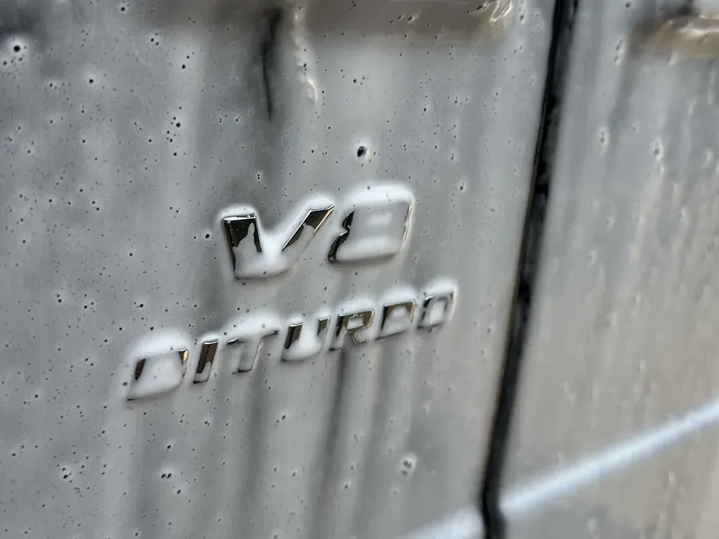
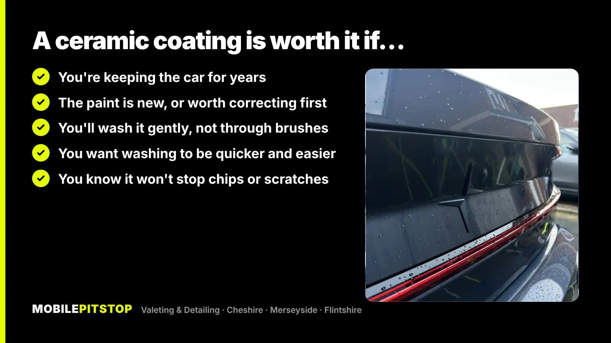
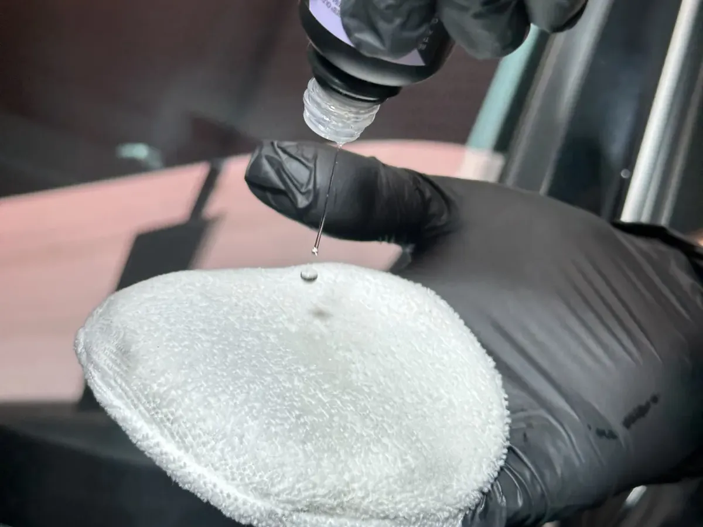

A ceramic coating is worth it if you're keeping the car for a few years, the paint is in good condition (or you're happy to have it corrected first), and you'll wash it gently. For those cars it means long-lasting protection, and washing that's quicker and easier because dirt struggles to stick.
It's not worth it if you're expecting a force field. A coating won't stop stone chips, it won't stop scratches from a brush wash, and it won't hide swirls. It seals in whatever condition the paint is in, good or bad. If you're selling soon or the car goes through automatic washes every week, a cheaper ceramic sealant is usually the better buy.
Here's what a coating does and doesn't do, why the preparation matters more than the bottle, and how to tell which option suits your car.
A ceramic coating is a liquid that's applied to the paint panel by panel and cures into a hard, thin layer. That layer sits on top of the clear coat and takes the weather, road film and wash mitt instead of it. Because it's slick and water-repellent, rain beads and runs off, more dirt comes away in the pre-wash and rinse, and there's less to scrub by hand.
What it does well:
What it doesn't do:
This is the part most people don't expect. A coating locks in the condition of the paint underneath it. Coat swirled, dull paint and you get well-protected swirls. Coat paint with tar spots and iron fallout still on it and the coating bonds to the contamination, not the paint.
So the real work happens before the coating comes out:

That's why a ceramic coating is a bigger job than it sounds, and why it's priced as one. If someone offers to coat a car without decontaminating and polishing it first, the coating is going over everything that's on the paint.
A wet climate is where a coating earns its keep, because the car gets dirty more often and needs washing more often. From November, salt and grit on the roads stick to everything, and a slick, water-repellent surface makes it much easier to rinse off before it does any harm. Our guide to protecting your paint before winter covers that in more detail.
The weather is also the catch. A coating has to be applied to dry paint and given dry conditions to cure, which isn't something you can promise on a driveway in a Wirral winter. That's why we book our Ceramic Coating service by quote: the date depends on the forecast as much as the diary.

The honest answer depends on the car and how it's used:
| Your situation | What usually makes sense |
|---|---|
| New car, or one you're keeping for years | A ceramic coating, with polishing first |
| Daily driver in decent condition, want it easier to keep clean | A 6-month ceramic sealant (our Protection Detail) |
| Paint looks dull or swirly in sunlight | Machine polishing first, then protection |
| Worried about stone chips on the motorway | Paint protection film on the front panels |
| Selling in the next few months | A deep clean; a coating is unlikely to pay for itself |
| Goes through a brush car wash every week | Change the washing first, or a coating won't look its best for long |
For most daily drivers, the Protection Detail is the sensible middle ground: a full deep clean inside and out, clay bar, a 6-month ceramic sealant on the paint and Glaco on the glass. It gives you most of the easy-washing benefit without the full preparation a coating needs. If the paint looks tired, machine polishing is the step that makes the biggest visible difference, whichever protection goes on after it.
On our coating jobs, the work runs in this order, and none of it is skipped:

There are longer-life coating options too, and we'll talk you through them when we quote, along with whether the car needs a coating at all.
How long a coating keeps working depends as much on the washing as the product. A few habits make the biggest difference:
If you'd rather not do it yourself, a Detailing Maintenance Plan keeps a protected car at that standard with regular visits.
Not sure whether your car needs a coating, a sealant or just a good clean? Send a few photos in daylight and we'll tell you straight which service the car needs, including when a cheaper one will do.